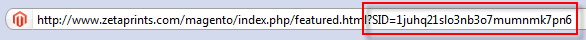
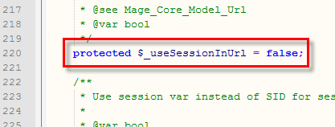

<?xml version="1.0" encoding="UTF-8"?><rss version="2.0"
	xmlns:content="http://purl.org/rss/1.0/modules/content/"
	xmlns:wfw="http://wellformedweb.org/CommentAPI/"
	xmlns:dc="http://purl.org/dc/elements/1.1/"
	xmlns:atom="http://www.w3.org/2005/Atom"
	xmlns:sy="http://purl.org/rss/1.0/modules/syndication/"
	xmlns:slash="http://purl.org/rss/1.0/modules/slash/"
	>

<channel>
	<title>SID &#8211; Magento web-to-print &amp; dynamic imaging</title>
	<atom:link href="http://www.zetaprints.com/magentohelp/tag/sid/feed/" rel="self" type="application/rss+xml" />
	<link>http://www.zetaprints.com/magentohelp</link>
	<description>Just another WordPress site</description>
	<lastBuildDate>Fri, 07 Jun 2013 06:55:21 +0000</lastBuildDate>
	<language>en-US</language>
	<sy:updatePeriod>hourly</sy:updatePeriod>
	<sy:updateFrequency>1</sy:updateFrequency>
	<generator>https://wordpress.org/?v=4.4.1</generator>
	<item>
		<title>Remove Session ID from URL</title>
		<link>http://www.zetaprints.com/magentohelp/remove-session-id-from-mageto-url/</link>
		<pubDate>Thu, 05 Aug 2010 08:58:16 +0000</pubDate>
		<dc:creator><![CDATA[admin]]></dc:creator>
				<category><![CDATA[Web-to-print for developers]]></category>
		<category><![CDATA[Advanced]]></category>
		<category><![CDATA[SID]]></category>
		<category><![CDATA[web-to-print software]]></category>

		<guid isPermaLink="false">http://www.zetaprints.com/help/?p=10529</guid>
		<description><![CDATA[This post explains how to disable the Session ID in URLs of your Magento web-to-print store. Magento adds a SID at the end of the URL by default. It makes URLs cumbersome and may lead to corrupt screens and data. Some features included in Magento web-to-print extension may not function correctly with a SID in [&#8230;]]]></description>
				<content:encoded><![CDATA[<p>This post explains how to disable the Session ID in URLs of your Magento web-to-print store.<span id="more-10529"></span></p>
<p>Magento adds a SID at the end of the URL by default. It makes URLs cumbersome and may lead to corrupt screens and data.</p>
<p></p>
<p>Some <a title="Magento web-to-print extension features" href="../../../../magento-web-to-print/features/" target="_self">features</a> included in Magento <a title="Magento web-to-print extension page" href="https://www.magentocommerce.com/magento-connect/web-to-print-and-dynamic-imaging.html" target="_self">web-to-print extension</a> may not function correctly with a SID in the URL. We recommend to remove it.</p>
<h2>Option 1 &#8211; Disable SID from Magento admin</h2>
<p>Login to your Magento administration panel and navigate to <em>System / Configuration / Web</em> tab.</p>
<div style="display: table;">
<p></p>
<div style="position: relative; top: 15px; display: inline;">
<p>Expand <strong>Session Validation Settings</strong> section and change <em>Use SID on Frontend</em> value to <strong>No</strong>.</p>
<p>Navigate to Magento homepage and click on any product. There should be no SID parameter in the URL. Proceed to Option 2 if SID is still there.</p>
</div>
</div>
<h2>Option 2 &#8211; Edit App.php file</h2>
<p>In some cases using option 1 does not work and Magento overwrites your settings. To ensure SID is disabled, you need to manually edit Magento&#8217;s <em>App.php</em> file. Navigate to <em>app/code/core/Mage/Core/Model</em> folder on your server and download the <strong>App.php</strong> file to your hard drive.</p>
<p>Open the file with a text editing application (<em>Notepad</em>, <em><a title="Free Notepad++ download" href="http://notepad-plus.sourceforge.net/uk/download.php" target="_self">Notepad++</a></em> etc.).</p>
<div style="display: table;">
<p></p>
<div style="position: relative; top: 15px; display: inline;">Change <strong>$_useSessionInUrl</strong> value from &#8220;true&#8221; to &#8220;<strong>false</strong>&#8220;.</div>
</div>
<p><strong>Note.</strong> This value is reset to its default &#8220;true&#8221; value when Magento is upgraded. Remember to change it back to &#8220;false&#8221;.</p>
]]></content:encoded>
			</item>
	</channel>
</rss>

<!-- Localized -->